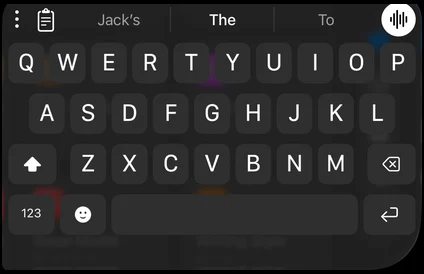
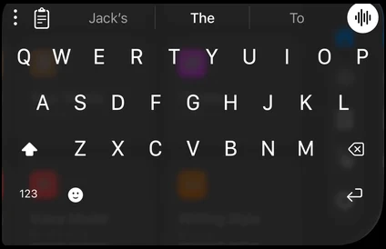
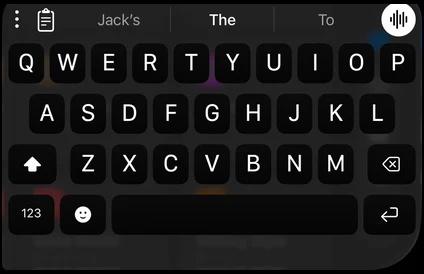
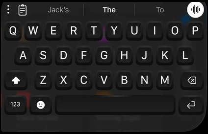
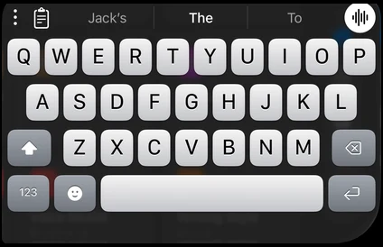

An iPhone keyboard that types like Apple's and learns where your thumbs land.
The real typing engine, running in your browser. What it learns lasts until you leave the page.
iikb
Loading the typing engine…
Keyboards
97.6% of words right, from thumbs that miss.
The same taps through the nearest key and Apple's spell checker get 85.2%.
Simulated thumbs with a steady lean (m toward n, b into the space bar, o toward i, every tap a little low) type the 500 phrases of MacKenzie and Soukoreff's set twice, 5,428 words, and never fix a mistake. Measured by scripts/eval; every run is in PROGRESS.md.
It moves with your grip.
Miss a key the same way three times and it moves to meet you.
The app's Your Taps page: where your thumbs land on each key, and where iikb now aims for you. Made-up taps.


Talk, and it types.
Parakeet v3 writes 8.2 seconds of speech in 0.05 seconds on the iPhone's Neural Engine. The sound never leaves the phone.


Voice by NVIDIA's Parakeet, run on the Neural Engine by FluidAudio.
Plug in your own service.
A source reads the field you're typing in and answers with a hint above the keys. One JSON request, one answer.
iikb sends
POST https://your.source/hint
{
"field": "6F1C2D0E-8A3B-4C5D-…",
"before": "honestly I hate",
"after": "",
"by": "keyboard",
"kind": "text",
"returnKey": "default",
"at": "2026-10-20T07:13:02.120Z"
}Your source answers
{ "hint": "This might come across harsher than you mean." }
docs/sources.md has every field and answer.
Raycast's five themes, on every screen.
Default, Clear, Physical, Mechanical and iOS 5, fitted to each of the iPhone Duo's screens, folded or open.

Default
Clear
Physical
Mechanical
iOS 5


The look follows Raycast's keyboard.